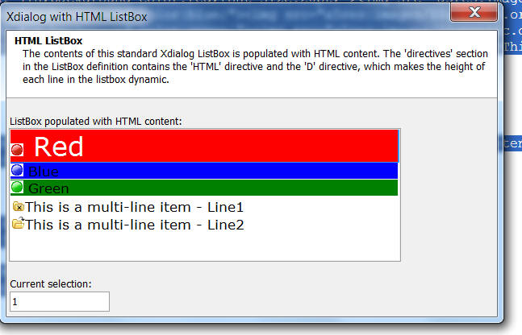

ListBoxes - Owner-Draw HTML ListBoxes
You can now use HTML in a standard Xdialog Listbox. To use HTML, you use the 'HTML' directive in the Listbox definition.
For example:
MyList = <<%html%
{DATA=1}
 Red
Red{DATA=2}
 Blue
Blue{DATA=3}
 Green
Green{DATA=4}
 This is a multi-line item - Line1 This is a multi-line item - Line1 |
 This is a multi-line item - Line2 This is a multi-line item - Line2 |
%html%
MyItem = "1"
dim pg as p
pg.BodyText = "The contents of this standard Xdialog ListBox is populated with HTML content. The 'directives' section in the ListBox definition contains the 'HTML' directive and the 'D' directive, which makes the height of each line in the listbox dynamic."
pg.HeadingText = "HTML ListBox"
pg.Image = ""
ui_dlg_box("Xdialog with HTML ListBox",<<%dlg%
{XdialogTitleSection=100,5pg};
{lf};
ListBox populated with HTML content:;
[%HTML;D%.80,10myItem^#MyList];
{lf};
Current selection:;
[.20myItem]
%dlg%)
Notice in this example that the data in the ListBox is a CRLF delimited list. Each row in the list can contain HTML. The HTML must appear on a single line. The ListBox command uses the 'HTML' and 'D' directives. 'HTML' enables HTML formatting and the 'D' directive enables dynamic line heights.
